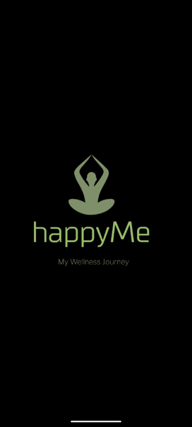
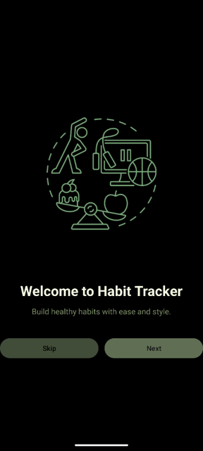
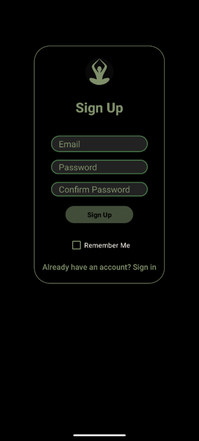
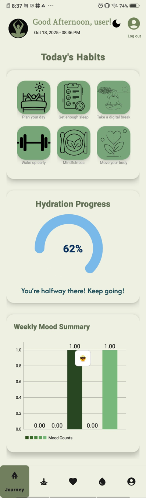
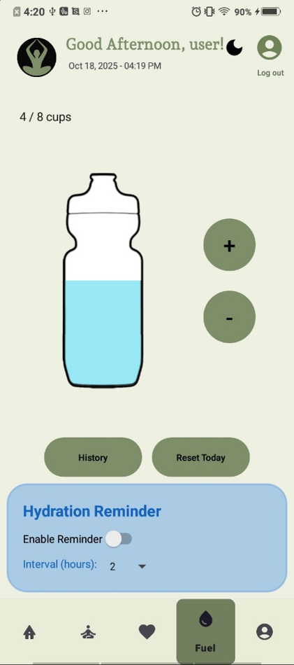
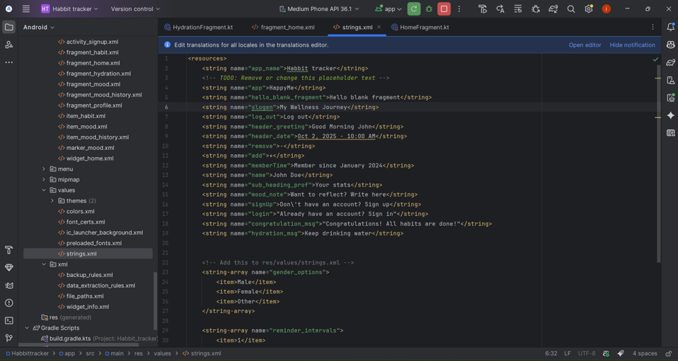
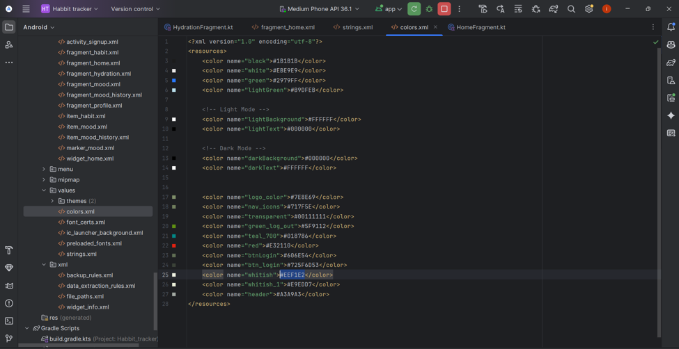
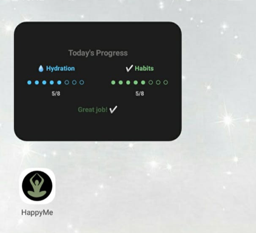

A personal wellness Android application designed to encourage healthy routines through habit tracking, mood monitoring, hydration management and personal progress insights.
Maintaining healthy habits often requires using multiple applications
to track routines, hydration, and emotional well-being. HappyMe brings
these essential wellness activities together into a single mobile application
that provides a seamless and personalized user experience.
The application enables users to manage daily habits, record moods,
monitor water intake, and review their overall progress while maintaining
all personal data locally on the device. By combining a clean interface with
motivational content and personalized insights, HappyMe helps users stay focused
on long-term lifestyle improvements.
Many people struggle to maintain healthy routines because their
wellness activities are scattered across different applications or not
tracked at all. This makes it difficult to stay consistent and understand
personal progress over time.
HappyMe solves this problem by providing an all-in-one wellness
platform where users can manage habits, monitor emotional well-being, track hydration
and review daily progress from a single application.
HappyMe integrates habit management, mood tracking, hydration monitoring and progress reporting into one centralized Android application. The app provides personalized greetings, motivational quotes, visual progress indicators, reminder notifications and detailed reports, creating an engaging experience that encourages users to develop healthier daily routines.
The home screen provides an overview of the user's daily wellness activities, including:
Users can manage their daily routines through a dedicated habit management system.
Features include:
The Mind section focuses on emotional well-being by allowing users to:
The Fuel page encourages healthy hydration habits through:
The profile section allows users to:
HappyMe follows a Single Activity Architecture
with multiple Fragments, allowing each feature
to remain modular while providing a consistent user experien
HappyMe combines Room Database and SharedPreferences for efficient local data persistence.
Used to store lightweight configuration data, including:
HappyMe implements complete CRUD functionality to manage user data including habits, mood entries, hydration records, and preferences.
Allows users to create new user profiles, habits, mood entries, and hydration records. New data is stored securely using the Room Database.
Retrieves user-specific information such as daily habits, completion history, mood records, and hydration progress. Kotlin Flow provides real-time data updates.
Enables modification of habits, completion status, mood details, hydration levels, and user preferences.
Removes unwanted habits, outdated records, and user data while maintaining proper database management.
HappyMe follows a calm and minimal design philosophy centered around wellness and positivity.
Moss Green | Tea Green | Spring Mist | White | Black
The interface emphasizes readability, simplicity, and accessibility while providing clear visual feedback through progress indicators, charts, and motivational elements.








Android application source code
View Repository →